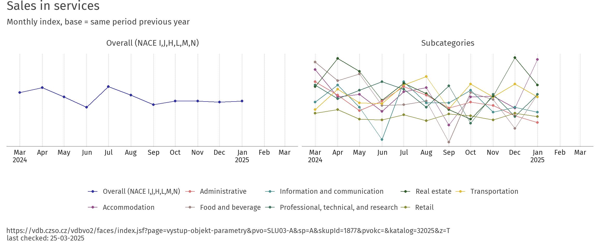
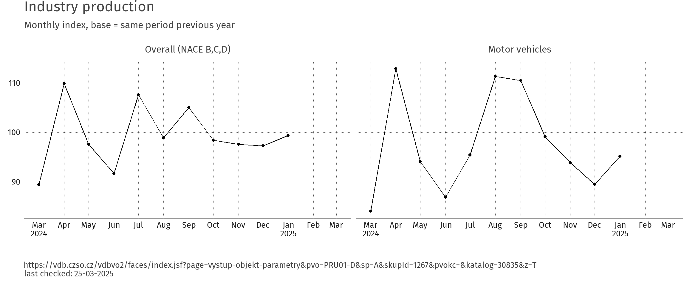
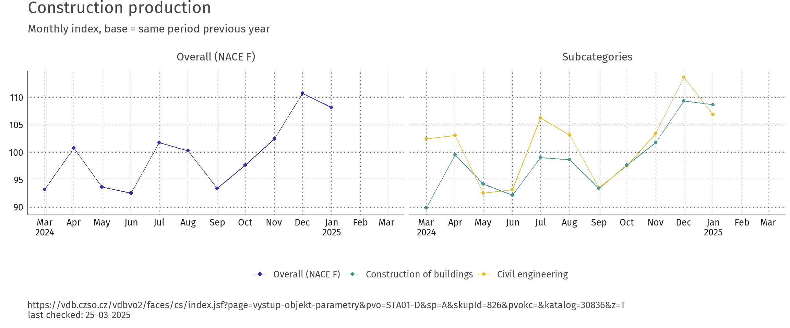
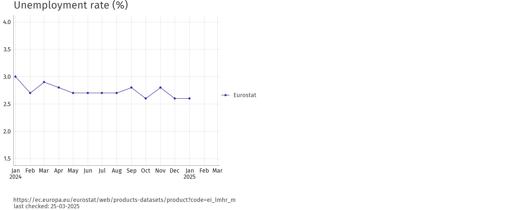
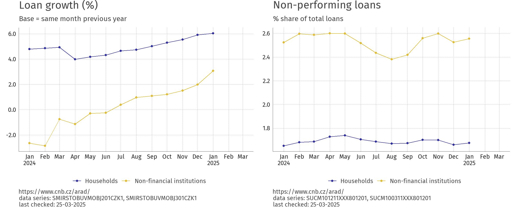
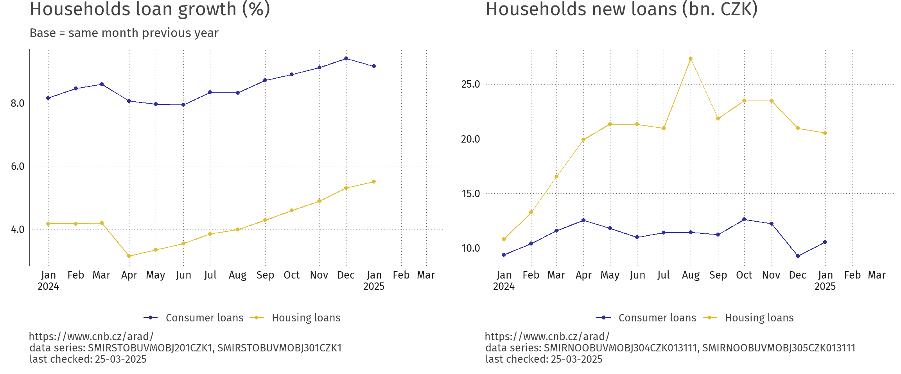

This dashboard aims to provide basic macroeconomic data for the Czech Republic. The idea is to gather an up-to-date values from different sources and provide an intuitive overview. The initial idea comes from the lack of unified information source about the economic development during the pandemic situation. See also czechtrack which provides fiscal data and served as inspiration to this endeavour.





